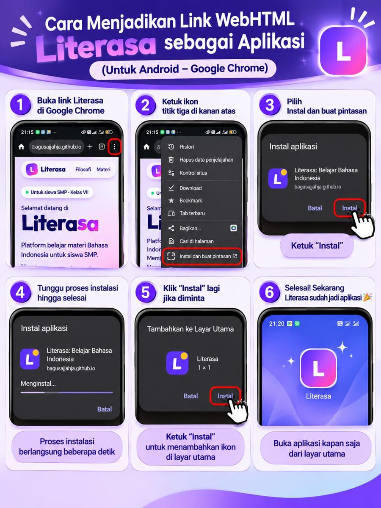
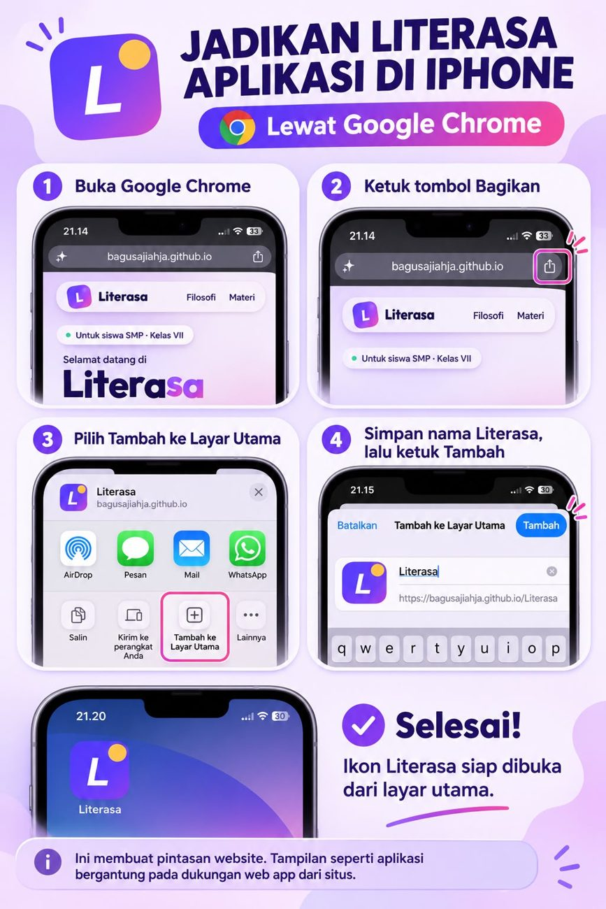

Selamat datang di
Platform belajar materi Bahasa Indonesia untuk siswa SMP. Membaca, memahami, dan menguasai materi, satu demi satu.
Hari ini kita belajar
Pasang Literasa seperti aplikasi supaya materi dan game bisa dibuka tanpa internet. Cukup sekali.


Nama ini menyatukan dua kata yang menjadi pondasi belajar bahasa: kemampuan memahami dan kumpulan huruf yang membuat gagasan bisa dituliskan.
Tiap materi punya cara belajarnya sendiri. Materi surat dibuat meriah supaya belajar terasa seperti bermain.
Kantor Pos Kelas: lima level petualangan dari Loket Selamat Datang sampai Misi Akhir. Menganalisis jenis, struktur, dan kaidah kebahasaan surat. Kumpulkan empat prangko. Kelas VII.
Mulai belajar →💌 TersediaGame 1: susun dan beri nama bagian surat. Untuk lencana, mainkan lewat Kantor Pos Kelas.
Main →🧩 TersediaGame 2 (Misi Akhir): tentukan jenis surat dari 8 Kartu Surat dan 2 Kartu Tantangan.
Selidiki →🕵️ Wajib internet20 soal, 30 menit, satu kali kesempatan. Butuh kode dari guru. Nilaimu langsung dikirim ke guru, jadi internet harus menyala.
Kerjakan →📝Diksi, citraan, dan makna.
🌙Unsur 5W+1H dan kaidah bahasanya.
📰